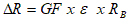
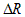
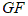
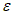
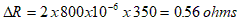
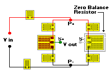

= bridge resistance
= bridge resistanceHow to Adjust for Initial Imbalance
Strain Gage Based Transducer reference
The procedure for adjusting the no-load bridge output to zero is essentially the same as for zero-shift compensation except that a low-TC resistor (e.g., manganin) is needed.
Assume, for an example, that after completing the zero-shift compensation, the bridge exhibits an initial unbalance equivalent to 800 microstrain in a single arm (400 �V/V in a full bridge).
The resistance change required for bridge balance can be expressed as:

where:

= resistance change, ohms
= gage factor of gages
= equivalent output strain = bridge resistance
Substituting the above quantities,

Thus, the resistance of one bridge arm needs to be increased by 0.56 ohm to null the output. If manganin wire in AWG-37 (0.08-mm) size were used, this resistance would correspond to a length of about 0.45 in (11.5 mm). Depending on the direction of the initial unbalance, the small wire can be inserted in series with the gage in one arm of the bridge for approximate zero balance.
An alternate method is to install a double ladder resistor such as the E-Pattern in the bridge corner opposite the copper ladder resistor.

This arrangement permits easy, precise adjustment of the initial zero balance. If the strain gages in the bridge circuit are made from constantan, then the usual choice for the E-Pattern resistor is also constantan to minimize the introduction of added zero shift with temperature. Similarly, a K-alloy resistor is normally chosen for use with K-alloy strain gages.